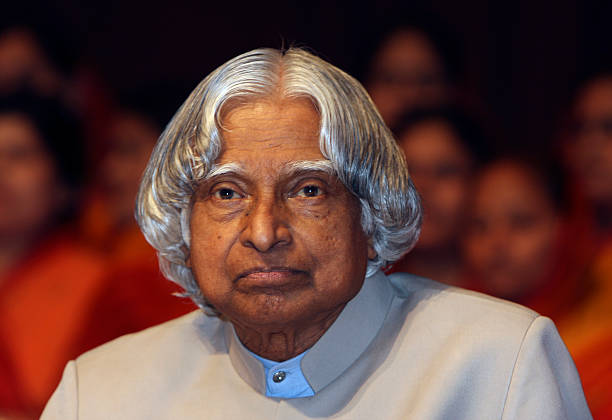

The Missile Man of India
"Dream, dream, dream. Dreams transform into thoughts and thoughts result in action."
Dr. A. P. J. Abdul Kalam was one of India's most respected scientists, engineers, and leaders. He played a significant role in India's missile and space programs and later served as the 11th President of India. Born on 15 October 1931 in Rameswaram, Tamil Nadu, Dr. Kalam came from a humble background and achieved remarkable success through dedication, hard work, and determination.
Led India's missile development initiatives and earned the title "Missile Man of India".
Served as the 11th President of India from 2002 to 2007.
Received India's highest civilian award for his contributions.
I admire Dr. Kalam because of his simplicity, humility, and dedication to the nation. He inspired millions of students to dream big and work hard to achieve their goals.
His life teaches us that success comes through perseverance, continuous learning, and positive thinking.
Dr. Kalam's vision for India, contributions to science, and commitment to education continue to inspire generations. His words and actions remain a guiding light for students and young professionals.